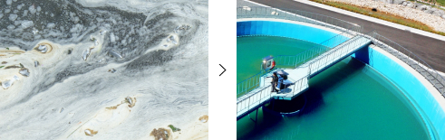
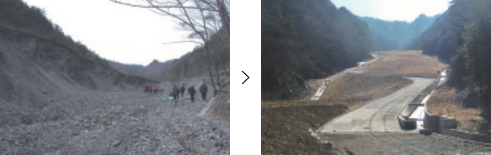
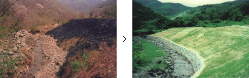
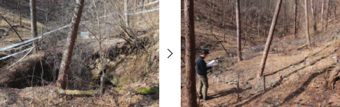

Mine Damage Safety Area
Mine Damage Inspection and Planning
Mine damages caused during mine development and after its closing could threaten the natural environment in the mine area and affect people’s safe lives. The Ministry of Trade, Industry, and Energy establishes a framework plan and action plan every five years to manage mine damage systematically, and we establish and execute yearly mine damage prevention plans to preserve the natural environment and to create a pleasant living environment.
Mine damage status check and establishing counter measures
We conduct site surveys on mines including suspended and closed every five years to systematically promote mine damage prevention projects. We incorporate survey results into our mine damage prevention framework and implementation plans. As a result of the survey conducted in 2021, 3,300 mines out of 5,475 suspended and closed mines were found to have mine damages.
Mine Damage Prevention Charge and related services
Charges are levied on mining right holders to promote mine damage prevention and minimization of pollution during mining. On the other hand, we provide a credit service to guarantee the full amount of the required deposit on behalf of the right holders in order to reduce financial burden on the right holders and promote sustainable execution of mine damage prevention businesses at the same time.
Mine damage recovery, post management
Mine damages require active measures and actions since they can have direct impacts on rivers or soils and potentially generate serious secondary damages to human through food chain and agricultural produces.
We carry out economic and eco-friendly mine damage recovery projects and complete
mine damage recovery projects by reducing the national financial burden caused by
mine damage through strict post-management.
- Areas: improvement of polluted water quality, enhancement & restoration of polluted soil, prevention on loss of tailings, forestry & land restoration, prevention & restoration of subsidence and prevention of noise, vibration & dust.
-  Improvement of polluted water quality
-  Tailings loss prevention
-  forestry & land recovery
-  prevention and recovery of subsidence
Mine safety business
Mine disasters inflict huge damage on people and assets. We support the expansion of safety facilities, technology, and equipment to prevent accidents in mines and to minimize damage should one occur. Moreover, we carry out due diligence on adequate level of safety policies at each mine which became mandatory upon enactment of the Mine Safety Act in 2019. In addition, KOMIR operates the Mine Safety Committee under the Ministry of Trade, Industry and Energy and operates rescue squads to save lives in the case of mine disasters. Komir also conducts safety promotion activities to raise the safety awareness of mine workers and analyzes the safety statistics on mine disasters.
- Areas: mine safety facility & technology support, review of mine safety regulations, mine facility inspection, work environment measurements, mine safety education (mandatory education)